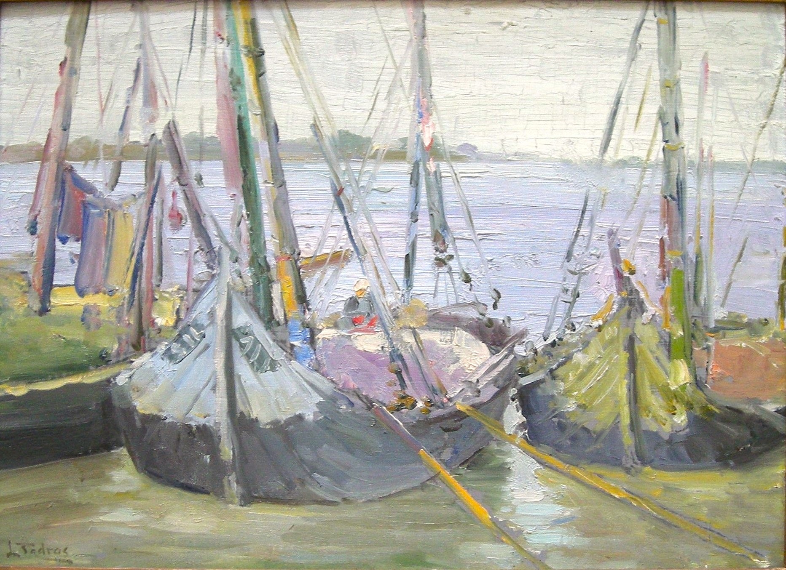

Labib Tadros
1894–1943
Artist Biography
Labib Tadros was a first-generation Egyptian artist born into a Coptic family from Sohag. He worked as a civil servant in the Ministry of the Interior but painting was his passion. He worked mainly in oils, painting local scenes and people in a semi-realistic style but with luminous lighting. He attended art classes at the Italian Institute in Cairo from 1918 and in the later 1920s trained under Italian artist Camillo Innocenti, the director of the Egyptian School of Fine Art in Cairo. During the 1930s he shared a studio with Sanad Basta but it was probably his association with Innocenti that led to the selection of his paintings for international exhibitions. In 1937 Tadros’s work was selected for the Paris Expo and in 1938 he showed several paintings at what was the very first Egyptian pavilion at the Venice Biennale. There he garnered critical approval, but the intervention of war and his early death from a stomach haemorrhage ended his artistic rise. A 2010 biography by Yousri el Kouedi is aptly titled ‘An Unfinished Song’. The Museum of Modern Egyptian Art in Cairo held a major solo retrospective of Tadros’s work in 2008.

Untitled, 1938